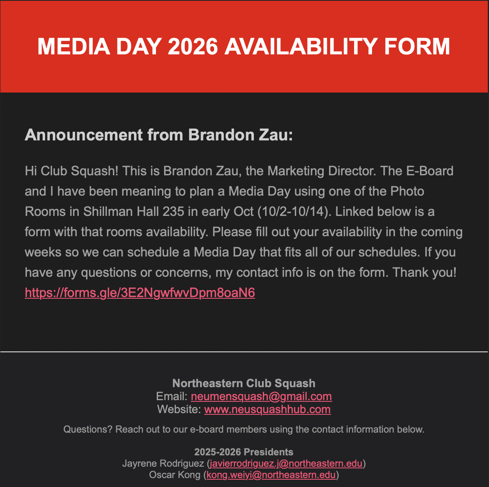

overview
My coach enforced my love for sports when he advised my parents to switch me to inline roller skates at 4. I played a variety of sports growing up, but Roller Skating was special. I competed internationally in Belgium in 2014 and Hong Kong in 2016, where I ended up winning. The pandemic hindered skating practices, but helped me find Squash in May 2024. Ever since, I've used it as a tool for mental and physical development, playing at least thrice a week. When I tried out for the team at Northeastern in Fall 2024, my unrefined skills denied me the spot. I went back to the drawing board and finally made the team Spring 2025. Once Harrison Seeley (former Vice President) graduated this past December, I was honored to assume the role in his stead, starting Spring 2026. Harrison's efforts contributed to the birth of neusquashhub.com: a full-stack web app with live attendance service and cloud emails and scheduling. After taking over, my efforts went into improving the website and building new features like announcements and improving scheduling features.
features
demonstration
guest view: Guests have do not have any executive access, they have read-only access to team announcements, ladders, and schedules.
player attendance: Admins can start the service and players can enter the code. When attendance is stopped, unattended players are marked absent, the record updates immediately.
player management: Admins can create, modify, and remove player accounts to be on the ladder. New players receive a welcome email with login credentials.
event management: Admins can schedule practices, matches, and events with dates and times that they would end at.
announcement & automatic emails: Each announcement triggers an automatic email to all players on the relevant team. Examples of emails sent when an announcement is posted and when a new player is created:

architecture
SquashHub follows the traditional full stack architecture: React frontend sends RESTful API calls
to an Express.js backend, which executes ACID-compliant CRUD operations on a PostgreSQL database.
Schema reaches the third normal form by separating inter-table many-to-many relationships into junction tables.
Additional table indexing except primary key is not needed (and won't be for the future, unless we get 150 users)
due to the simple schema and small amount of data size.
I chose to implement the Docker container and Flask API on AWS EC2 after learning it to take this website over.
That's the one that runs the live updating misc page, btw.
Everything: frontend, backend and database, runs on a single AWS EC2 VM. Not optimal but it is more than enough for what Club Squash currently needs. Cloudflare DNS is used to proxy incoming HTTPS requests and forwards them to the EC2 instance over HTTP. A custom reverse proxy server routes all the requests between frontend and backend on the same origin, to eliminate any chance of CORS issues.

attendance service
The attendance service runs in memory as a custom class within the backend process. When an admin starts the service, it generates a random 4-digit alphanumeric code and sets an "active" flag to true. Players submit codes through the frontend; correct codes create positive attendance records in the database. The "Mark Unattended as Absent" when clicked by an admin, creates negative records. It also queries for users that did not enter the attendance code therefore do not have a positive record for that calendar day, and creates negative records there as well.
This architecture is simple but comes with tradeoffs. Running the service in memory makes the backend stateful, which complicates horizontal scaling—each server would need to synchronize attendance states. Using calendar-day logic also creates edge cases: what if two events happen on the same day? what if an event runs past midnight? what if someone's in a different timezone during a virtual event? These scenarios are outside the current use case, but the date-based logic remains a bottleneck for future features.
authentication
Passwords are one-way encrypted using bcrypt and stored in the player table so that sensitive
data is never written to disk in plaintext. While the UI hides admin controls from non-admin users,
it is still possible for someone to spoof requests with an admin username. To prevent this, all POST, PUT, PATCH, and
DELETE requests require an authorization token. This token is randomly generated and sent to an admin
after successful password verification. The backend follows active tokens in a ring buffer, ensuring
only recent tokens remain valid and old ones don't pile up or become a liability.
This setup works for now, but migrating to OAuth via Auth0 or Firebase would provide industry-standard authentication with features like Single Sign-On (SSO). That's a good area for future developers to improve.
source?
This SquashHub website was designed to be an evolving platform that can grow with the team's needs. As Harrison helped me with the transition to take it over, I have opened the codebase to all Club Squash members, so anyone who's interested can contribute new features, fix bugs, and improve the platform over time. Any developer can make their own branch, push their local changes on there & create a pull request that I can view and analyze. Since we are all pretty busy with college and this was made as a passion project that does in fact have a lot of potential, we arrange meetings before squash practices in the evenings to discuss goals and concerns so far.
After taking over as lead developer, I oversee all contributions and perform code reviews, test new features, manage deployments to production, and help onboard new developers to the codebase architecture. I also manage all of the production server, the virtual machine, domain, and service accounts for third-party integrations.